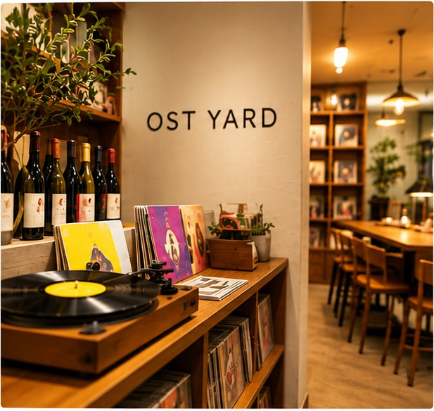
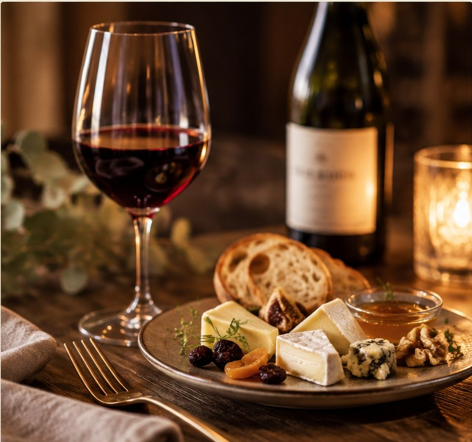
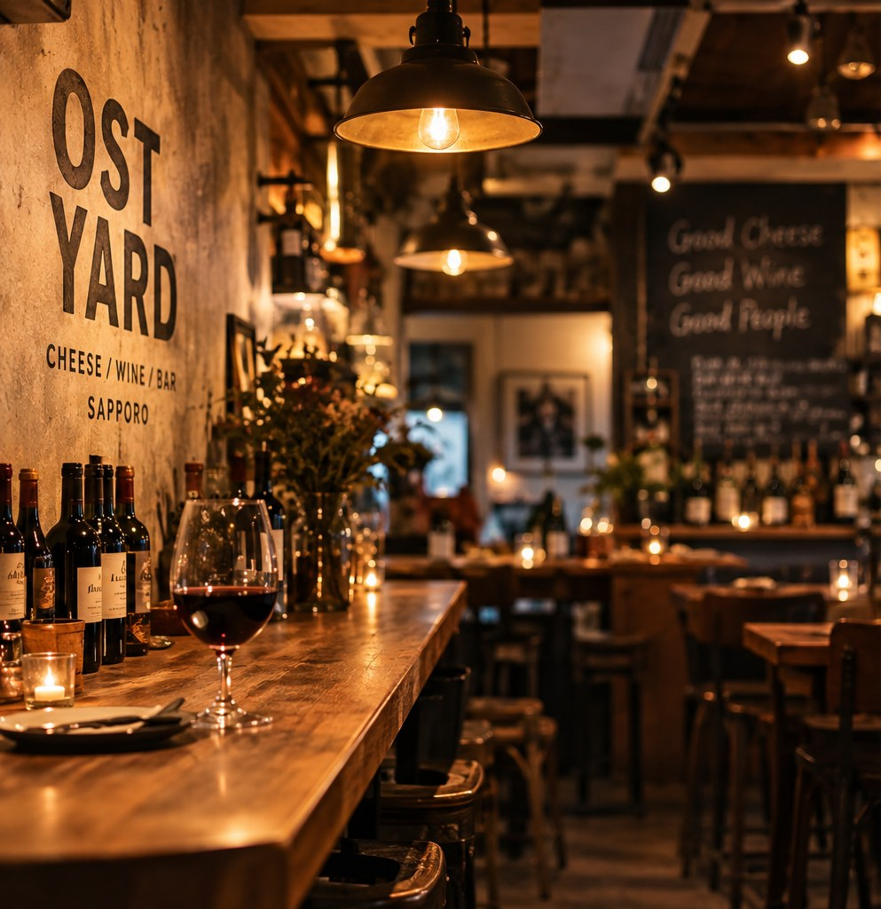

CONCEPT
誰でも、ふらっと居心地よく。
量産型のチェーン店でも、敷居の高い専門店でもない。ジャンルも年齢も気にせず、好きなものの話ができる場所を目指してます。

OST YARDという名前について。
OSTは北欧の言葉でチーズのこと。そこにYARD（資材置き場）を組み合わせました。気取らず、好きなものを並べておける場所でありたくて。
セレクトのこだわり

チェーン店にはない、チーズとワインの組み合わせ方

音楽やレコードが好きな人にも伝わる空間づくり
詳しくなくても、気負わず選べる接客
お店に立つ人たち
カウンターに立つのは、店主ひとり。ゆっくりお話しできる距離でお待ちしています。
店主 ユキ
チーズの話も、音楽の話も、何も話さない夜も歓迎です。